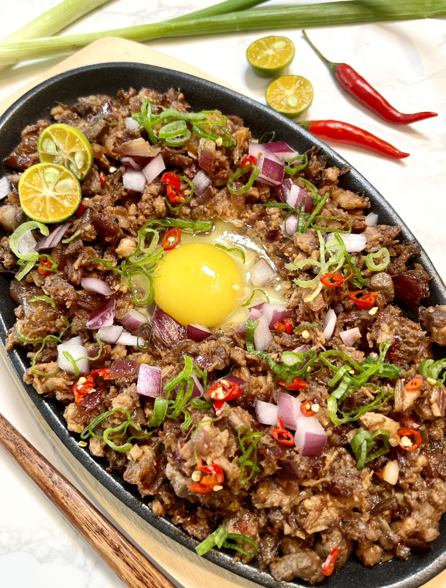
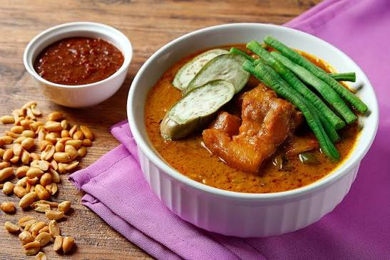
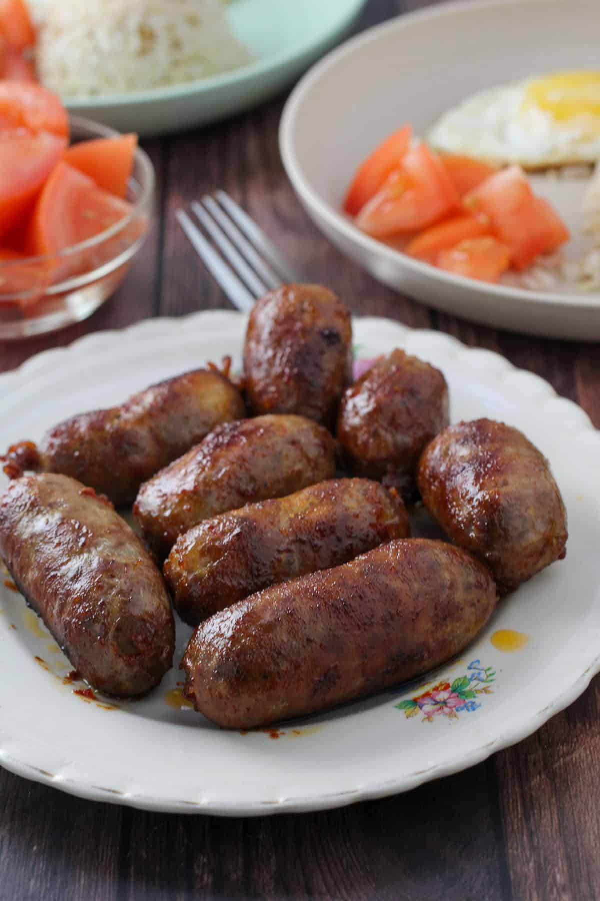
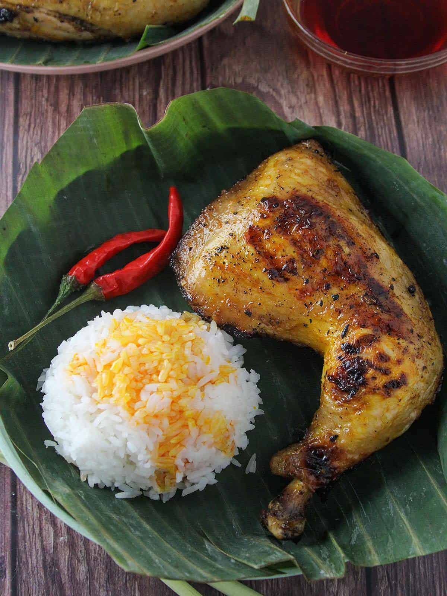
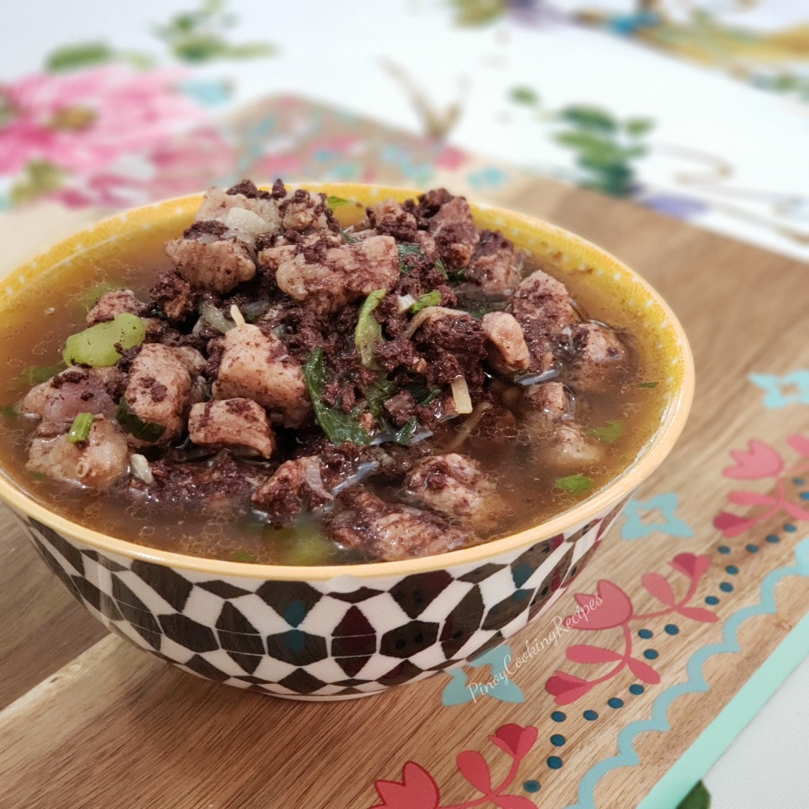
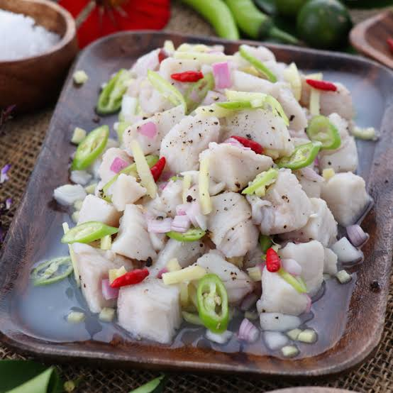
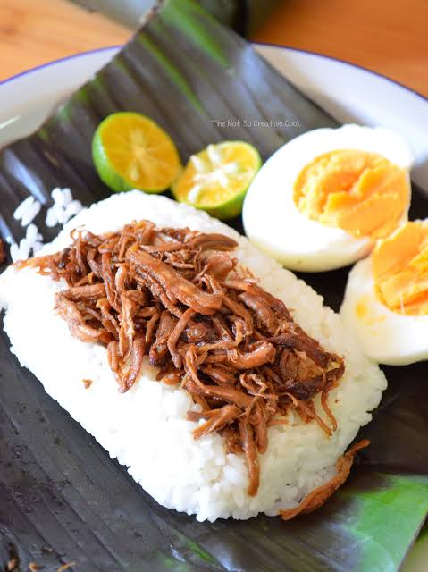
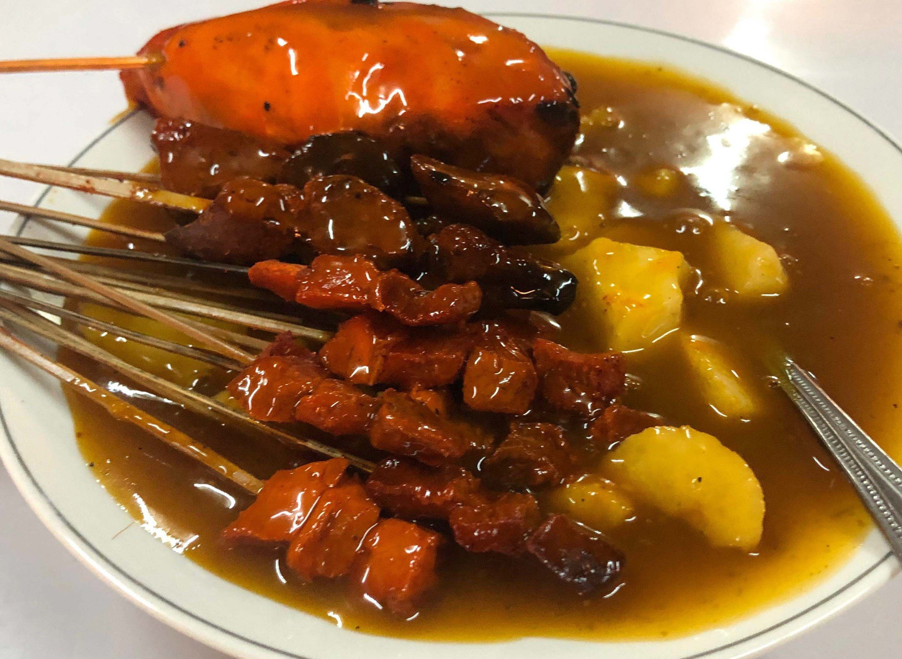
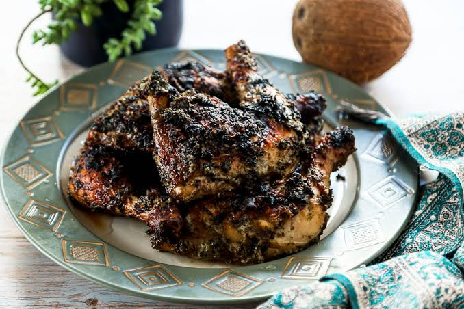

|
 SISIG A popular Filipino dish made from chopped pork, onions, and seasonings. It is known for its savory, slightly spicy, and sizzling presentation. |
 KARE-KARE A traditional Filipino stew made with a rich peanut sauce, oxtail or beef, and assorted vegetables. It is commonly served with shrimp paste for added flavor. |
 LONGGANISA A Filipino-style sausage that can be sweet, savory, or spicy depending on the region. It is often served with garlic rice and fried egg for breakfast. |
|
 CHICKEN INASAL A grilled chicken dish marinated in a blend of spices and seasonings. It is famous for its smoky flavor and originates from Bacolod City. |
 BATCHOY A flavorful noodle soup made with pork, pork innards, and broth, topped with crushed pork cracklings and fried garlic. It is a specialty of Iloilo. |
 KINILAW A traditional Filipino dish made from fresh fish or seafood cured in vinegar and mixed with onions, ginger, and chili peppers. It is often compared to ceviche. |
|
 PASTIL A simple Mindanao delicacy consisting of steamed rice topped with shredded chicken or beef, wrapped in banana leaves. It is a convenient and affordable meal. |
 SATTI A specialty from Zamboanga made of grilled meat skewers served with a spicy, flavorful sauce. It is commonly eaten with rice or rice cakes. |
 PIYANGGANG A traditional Tausug chicken dish cooked with coconut milk and burnt coconut, giving it a distinctive black color and rich, smoky flavor. |